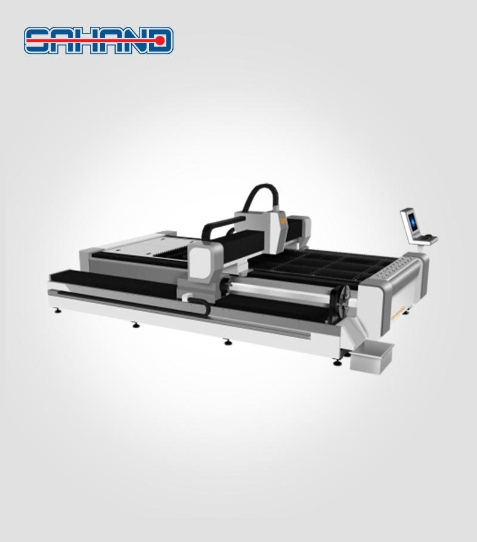

کد محصول ثبت نشده؛ شناسهٔ صفحه: workspace-37417d7c2284
نام فایل تصویر ارسالی و نشان سهند روی تصویر؛ برابری با کدهای DZ یا LD تأیید نشده است. اطلاعات سازنده، گزینههای خانواده و تصویر مرجع به معنی تأیید موجودی یا پیکربندی نصبشده نیست.

نام محصول از نام فایل ارسالی حفظ شده است؛ تصویر تبلیغاتی/رندر است، نه تأیید مشخصات فنی
سند تطبیق


تطبیق کامل نام فایل پس از تبدیل + به فاصله؛ بدون حدس دربارهٔ کد مدل
سند تطبیق